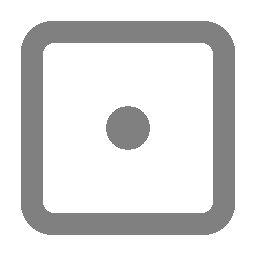
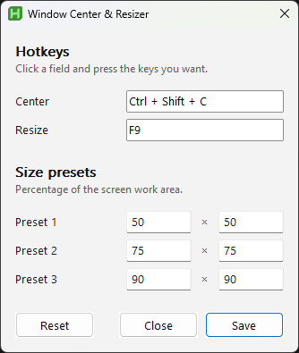

Press a shortcut and the active window snaps to the middle of your screen — or cycles through size presets. That is the entire program.

Two shortcuts and three size presets. There is no second tab, and there will not be one.
Click a field and press the combination you want. No syntax to memorise.
Settings are written to settings.ini next to the executable, so a USB stick carries them with it.
Centre the active window without changing its size.
Cycle the active window through 50%, 75% and 90% of the screen's work area.
The executable is unsigned, so Windows may show a SmartScreen prompt the first time you run it. The full source is on GitHub and builds with a single command.